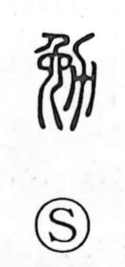

勉

Kun: tsutomeru | On: ben
to endeavor ・ diligence ・ study ・ to encourage
Explanation
勉 combines 力 with 免 as its sound element. 力 pictures an agricultural implement, the plough, and directs the meaning toward labour in the fields. 免 depicts the posture of childbirth, another activity requiring strenuous effort.
勉 first concerns applying oneself to agricultural work. The bent posture of field labour also connects with 俛, bending forward. From this sustained exertion come striving, working diligently, and making an effort to accomplish something.
The effort can be urged upon another person as well as oneself, giving encouragement or exhortation. In 勉強, application to study continues the broader idea of pressing on with a demanding task.